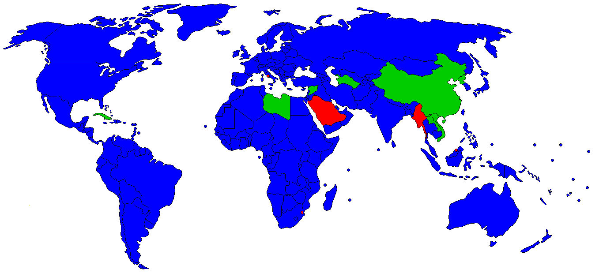
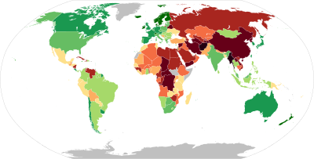

La dictature s’est toujours chez les autres

Cette carte montre les gouvernements se réclamant (ou non) de la démocratie en juin 2019.
Seules les pays rouge ne se réclament pas être une démocratie
On entend souvent que tel ou tel pays serait une démocratie et que tel ou tel autre serait une dictature.
Cette affirmation pose problème dans le sens où on établis ici une frontière stricte entre deux catégories que pourrait avoir un pays, à savoir démocratique ou non.
Après une telle affirmation, la question de la pertinence de restreindre l’espace des régimes à deux états se pose.
Et cette question de la pertinence de restriction à deux catégories se pose d’autant plus, qu’il convient de disposer d’un critère de discrimination permettant de justifier de l’attribution d’un pays à tel ou tel catégorie, si non la catégorisation est arbitraire et ne saurait être justifiable.
Mais avant de disposer d’un critère, il convient de s’intéresser à l’objet de l’étude.
Définition du termes démocratie
Selon Wikipédia : Le terme démocratie, du grec ancien δημοκρατία / dēmokratía, combinaison de δῆμος / dêmos, « peuple » (de δαίομαι / daíomai, « distribuer, répartir »), et kratos, « le pouvoir », dérivé du verbe kratein, « commander », désigne à l’origine un régime politique dans lequel tous les citoyens participent aux décisions publiques et à la vie politique de la cité.
Nous voyons ici une définition stricte, dans le sens où :
- soit tous les citoyens participent aux décisions publiques
- soit tous les citoyens ne participent pas aux décisions politique
Cette définition introduit le concept de participation aux décisions
Dans le cas où la participation de tous n’est pas possible, on peut introduire le concept de représentation dont le rôle des députés est la participation aux décisions de telle manière que l’aurait fait les citoyens.
Mais dans ce cas se pose le problème de la représentation, à savoir à quel point les députés représentent les citoyens.
Quelques éléments peuvent favoriser cette représentation :
- processus d’élection des députés
- processus de la participation aux décisions
- disposition d’informations loyales, claires
Indice de démocratie selon The Economist

Carte de l’indice de démocratie publié par Economist Intelligence Unit en 2022 : plus le pays est en vert, plus il est considéré comme démocratique.
C’est avec cette vision que (Group 2006) définit son indice de démocratie à savoir : “The Democracy Index is based on five categories: electoral process and pluralism, functioning of government, political participation, political culture, and civil liberties. Based on its scores on a range of indicators within these categories, each country is then classified as one of four types of regime:”full democracy”, “flawed democracy”, “hybrid regime” or “authoritarian regime”.
Soit :
- un pays j
- une question k
- Q_{k,i} la réponse du citoyen i à la question k pouvant prendre valeur dans la la liste
[0;0.5;1]
Alors on a un indice de démocratie que l’on note ID_{j} définis par l’expression suivante :
- ID_{j}=\frac{\sum_{i=1}^{N}\sum_{k=1}^{60}Q_{i,k}}{60}.
Si cette ID_{j}>0.8 alors full democracy
Si cette ID_{j}<0.8 & ID_{j}>0.6 alors flawed democracy
Si cette ID_{j}<0.6 & ID_{j}>0.4 alors hybrid regime
Si cette ID_{j}<0.4 alors authoritarian regime
Indice de démocratie alternatif
Dans cette définition alternative, nous allons uniquement faire une définition alternative de k.
Soit un pays j définis par des citoyens i avec N l’ensemble des citoyens.
Les citoyens sont soumis à des lois k avec K l’ensemble des lois.
La seule différence ici par rapport au modèle de The Economist est d’avoir remplacé k une question par k la question relative à l’acceptation d’une loi k.
En définissant Q_{k,i} comme :
- 1 si l’acceptation à la règle k par le citoyen i
- 0.5 si pas d’avis vis à vis de la règle k par le citoyen i
- 0 si pas d’acceptation de la règle k par le citoyen i
Nous obtenons un modèle similaire à celui de The Economist.
La contrainte est que l’espace K est ici bien supérieur à 60 et que l’information est bien plus complexe.
Néanmoins nous obtenons une mesure plus précise quand à l’objet étudié.